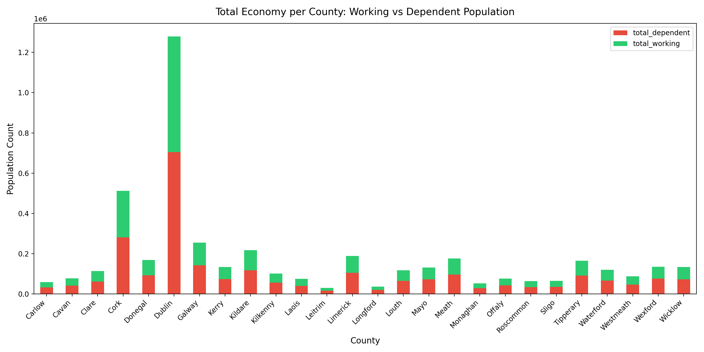
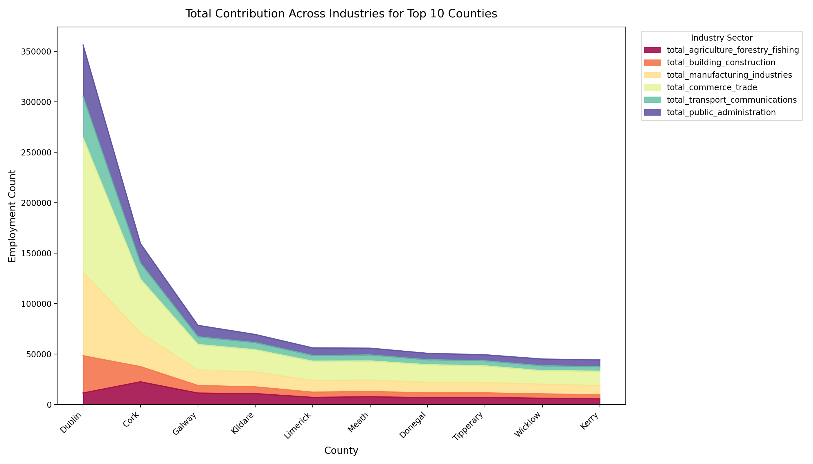
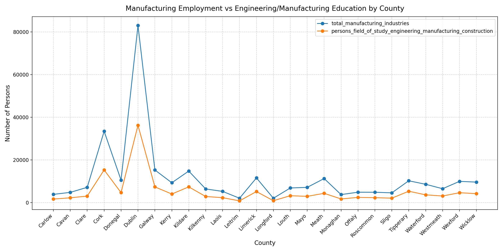
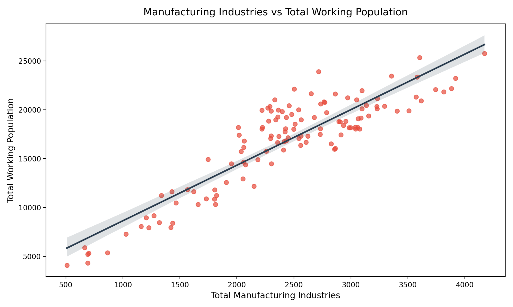
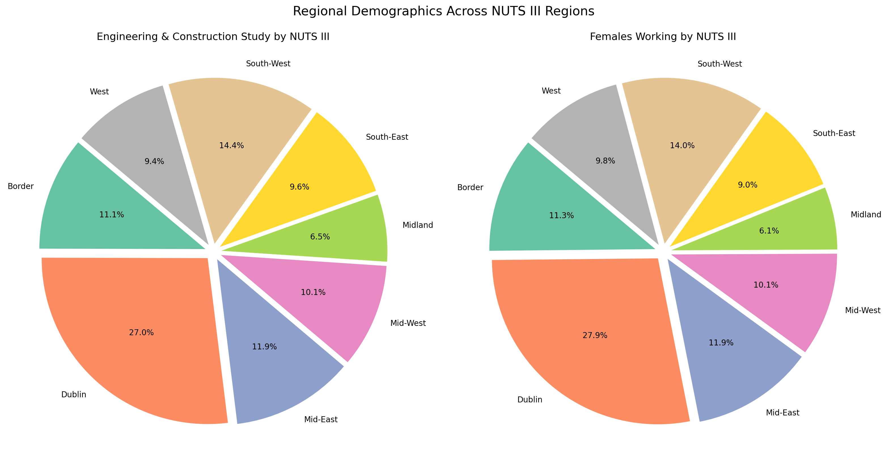
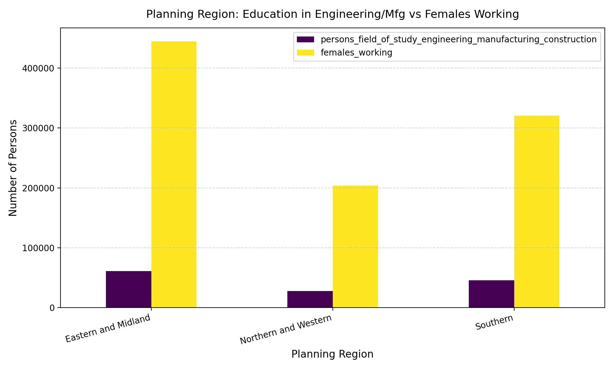
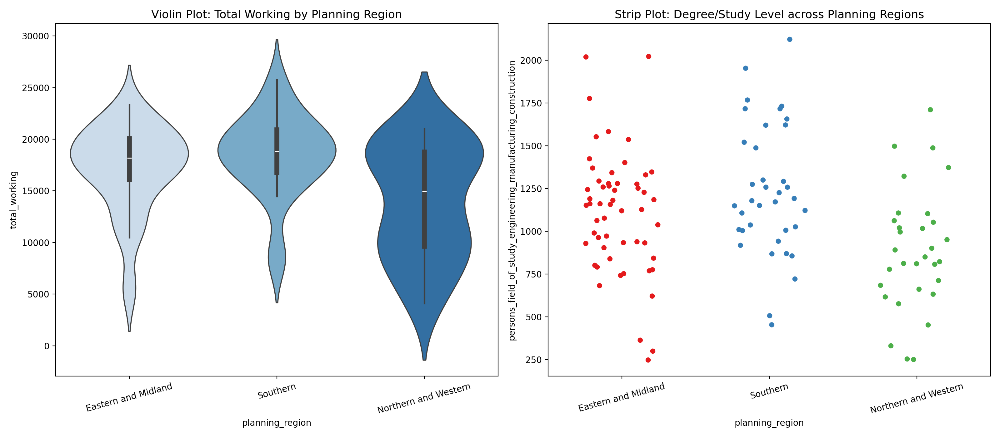
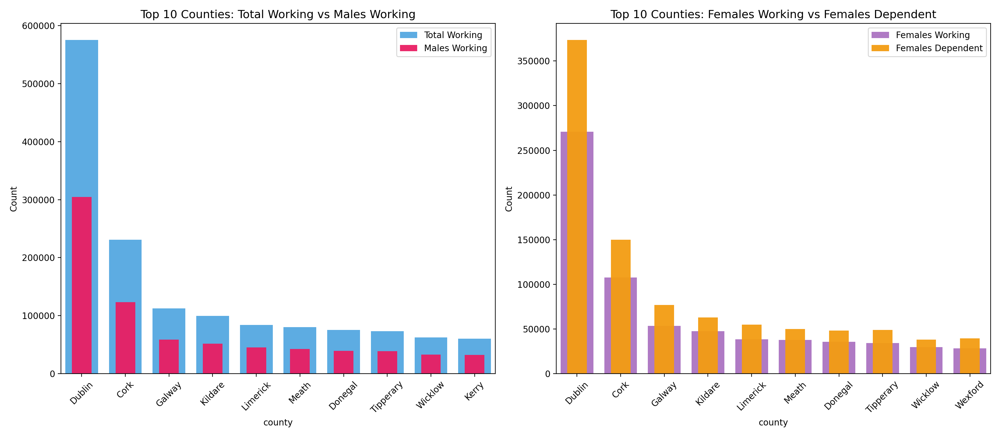
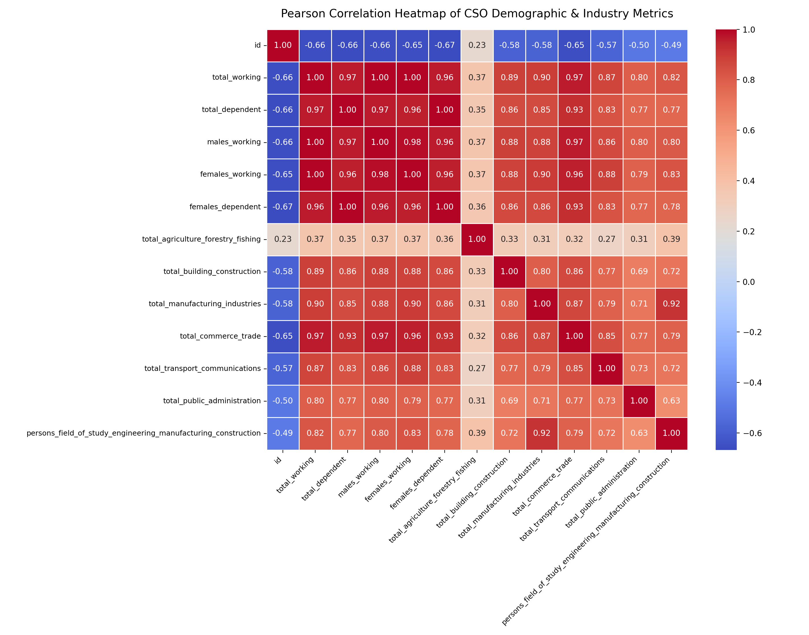

Exploratory Data Analysis on Central Statistics Office (CSO) demographic, educational, and industrial employment data across Irish counties, NUTS III regions, and planning divisions.
Stacked bar chart comparing working vs dependent population distribution across all 26 counties.

Stacked area chart breaking down employment across agriculture, construction, manufacturing, trade, transport, and public administration.

Dual trend line highlighting county-level correlation between engineering/construction education and manufacturing employment.

Regression trend line modeling the relationship between manufacturing employment and overall labor force.

Exploded pie charts comparing technical education share vs female workforce participation across NUTS III areas.

Bar chart comparing engineering/construction education and female employment across the three macro planning regions.

Violin plot showing density of workforce and strip plot capturing distribution of degree holders across regions.

Comparative overlapping bars for males vs total working, and females working vs dependent.

Correlation matrix covering all industrial sectors, working population metrics, and educational fields of study.

Plotly interactive hierarchical visualization of Ireland's workforce: Planning Region → NUTS III → County.
Interactive HTML document generated with Plotly Express.
Open Interactive Treemap →